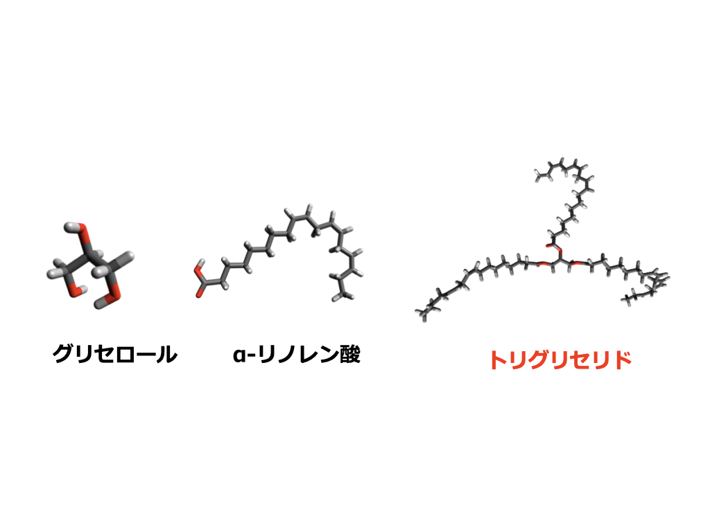
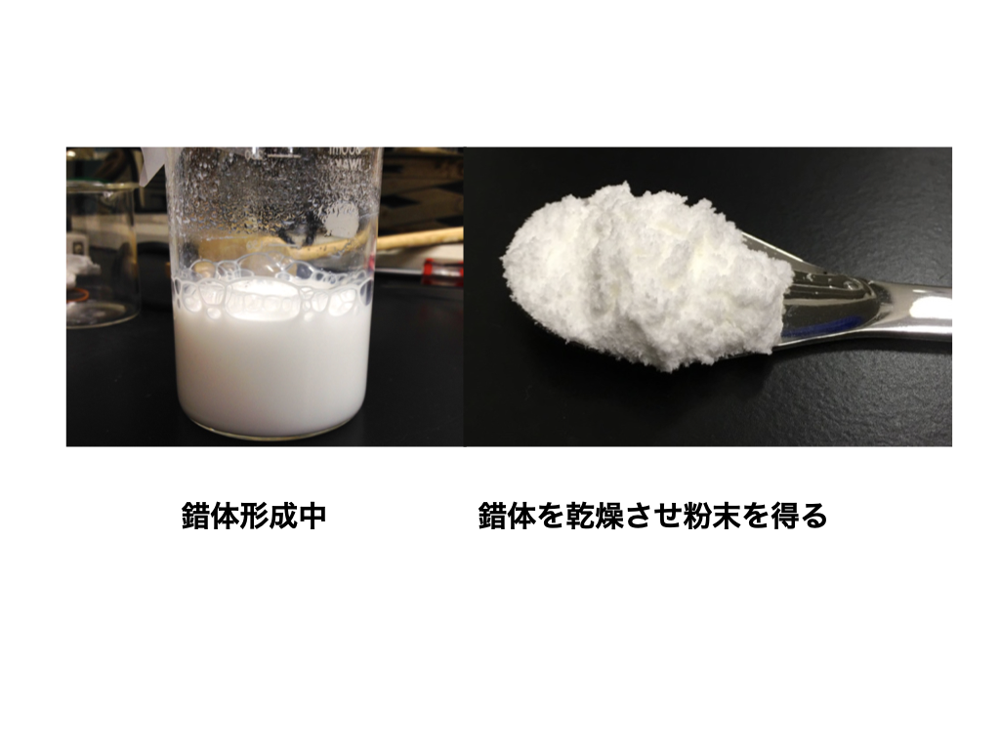

研究材料：エゴマ（Perilla frutescens）
エゴマはシソ科の一年草で、日本・韓国・中国などアジアに広く自生・栽培されています。種子から搾油されるエゴマ油は、植物油の中でもトップクラスのオメガ3系脂肪酸含有率を誇ります。
エゴマ油とトリグリセリドの多様性
一年草のエゴマの種子から搾油されるエゴマ油は、オメガ3系脂肪酸の一種であるα-リノレン酸を50〜60％という高い割合で含むため、ヘルシーオイルとして注目されています。しかし、α-リノレン酸はEPA・DHAと同様に熱に弱く、酸化されやすいという欠点を持っています。
エゴマ油の主成分はトリグリセリドです。1つのグリセロール骨格に3つの脂肪酸がエステル結合した分子で、主要な5種類の脂肪酸（パルミチン酸・ステアリン酸・オレイン酸・リノール酸・α-リノレン酸）の組み合わせと結合位置（sn-1・sn-2・sn-3位）により、膨大な種類のトリグリセリドが存在します。5種類の脂肪酸だけで数学的に125通りのパターンがあり、私たちが「エゴマ油」と呼ぶ液体の中には、これほどまでに多様な分子が含まれています。
γ-CDによる包接と粉末化
シクロデキストリンはこれまでの研究で、遊離脂肪酸（エステル結合していない状態の脂肪酸）と包接錯体を形成し、その脂肪酸を酸化から守る分子カプセルとして機能することが知られていました。
私たちは8個のグルコースからなるγ-シクロデキストリン（γ-CD）とエゴマ油との包接錯体を調製しました。その結果、比較的熱安定性の高い包接錯体が固体（粉末）として回収できることが分かりました。これによりエゴマ油の粉末化が可能になり、酸化を抑え、顆粒・錠剤・粉末食品など食品として大幅に扱いやすくなります。
図・データ


関連論文
Yoshikiyo et al. (2019) Food Chemistry — doi:10.1016/j.foodchem.2019.04.093
吉清恵介 (2020) 産学官連携ジャーナル — doi:10.1241/sangakukanjournal.16.11_4
吉清恵介 (2026) 表面と界面 — doi:10.4164/sptj.63.181